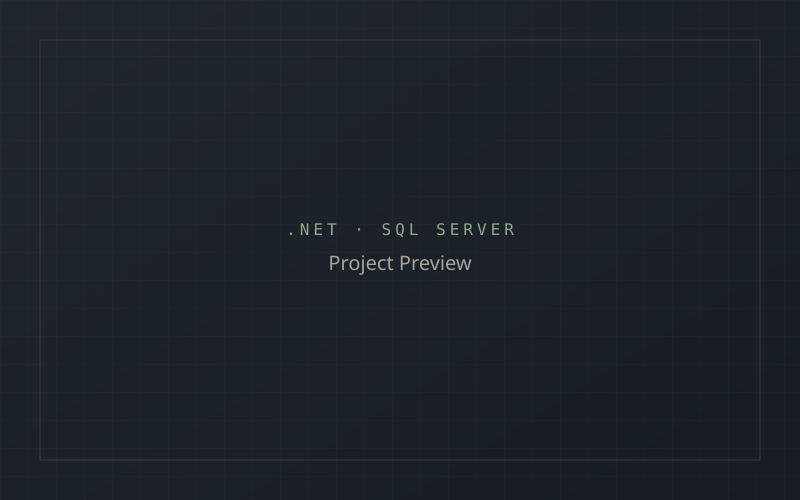

Learning Management System
A web-based learning management application for managing courses, learning content and related administrative workflows.

A web-based learning management application for managing courses, learning content and related administrative workflows.

The Learning Management System is a web application built to manage courses, learning content and related administrative workflows for a training-oriented use case.
Managing courses and learning content in a structured way requires a database-driven application that supports adding, updating and organizing content reliably.
Built with ASP.NET Web Forms, C# and SQL Server, using JavaScript, AJAX and jQuery for dynamic interactions, and Bootstrap for a responsive interface.
Organizing course and content management workflows clearly while keeping the codebase maintainable.
Key outcome: Improved understanding of building database-driven business applications with ASP.NET and SQL Server.